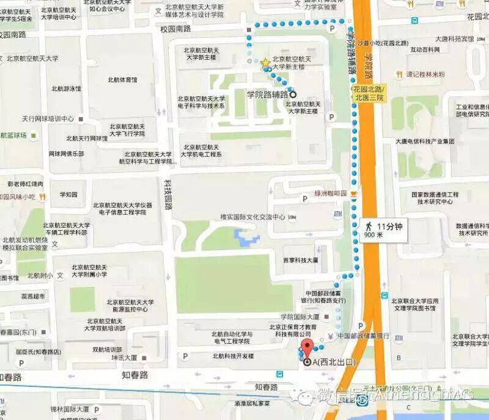

一生
主持人：Vance
即兴演讲主持人：Summers
人的一生貌似很长，我们可以做很多的事，我们可以读书，我们可以运动，我们可以玩儿摄影，我们可以看电影，我们可以追求梦想。我们有很多时间去做很多我们喜欢的事。但是人的一生又是短暂的，没有几个10年，还没来得及做自己喜欢的事，就发现自己所剩的时间已经不多了。一生说长可长，说短可短，那我们怎么样好好把握自己的一生呢。来到北航头马，分享自己的所感所悟。
中文备稿演讲
Han CC3 不着急
随着经济的发展，我们的脚步越来越快，我们没有时间读书，没有时间思考，甚至没有时间好好享受片刻的安宁。在这个效率大于一切的时代，我们得到了很多，但是我们也失去了很多。当我们慢下来，当我们不着急的时候，我们的生活又会发生什么样的变化呢？接下来，Han将会告诉我们，在快节奏的今天，如何做到不着急。
KiKi CC5 泪点
男儿有泪不轻弹，美人流泪断人肠。一个人眼泪，尤其是一个女生的眼泪承载了太多太多。一个泪点多的女生，她的故事总是那么吸引人。今天Kiki会和大家讲讲她的泪点。她有哪些快乐忧伤的故事，又有哪些悲欢离合的经历？让我们走进Kiki的世界，听一听她真实的内心独白。
Toastmasters International (TI) is a nonprofit educational organization that operates clubs worldwide for the purpose of helping members improve their communication, public speaking, and leadership skills.
